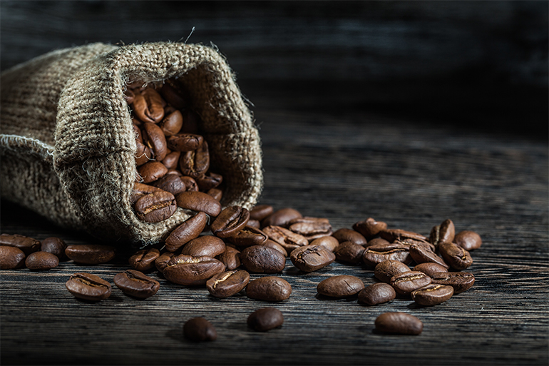

Real coffee beans
På CAFE. House brinner vi för en härlig kaffeupplevelse. bryggkaffet och espresson som serveras i våra coffee shops är ett s.k. specialkaffe
Subscribe to our newsletter
På CAFE. House brinner vi för en härlig kaffeupplevelse. bryggkaffet och espresson som serveras i våra coffee shops är ett s.k. specialkaffe
På CAFE. House brinner vi för en härlig kaffeupplevelse. bryggkaffet och espresson som serveras i våra coffee shops är ett s.k. specialkaffe
På CAFE. House brinner vi för en härlig kaffeupplevelse. bryggkaffet och espresson som serveras i våra coffee shops är ett s.k. specialkaffe

På CAFE. House brinner vi för en härlig kaffeupplevelse. bryggkaffet och espresson som serveras i våra coffee shops är ett s.k. specialkaffe
Coffee beans
A coffee bean is a seed of the Coffea plant and the source for coffee. It is the pip inside the red or purple fruit often referred to as a cherry. Just like ordinary cherries, the coffee fruit is also a so-called stone fruit. Even though the coffee beans are not technically beans, they are referred to as such because of their resemblance to true beans.
Latteart
Latte art is a method of preparing coffee created by pouring microfoam into a shot of espresso and resulting in a pattern or design on the surface of the latte. It can also be created or embellished by simply "drawing" in the top layer of foam. Latte art is particularly difficult to create consistently, due to the demanding conditions required of both the espresso shot and milk. This, in turn, is limited by the experience of the barista and quality of the espresso machine.